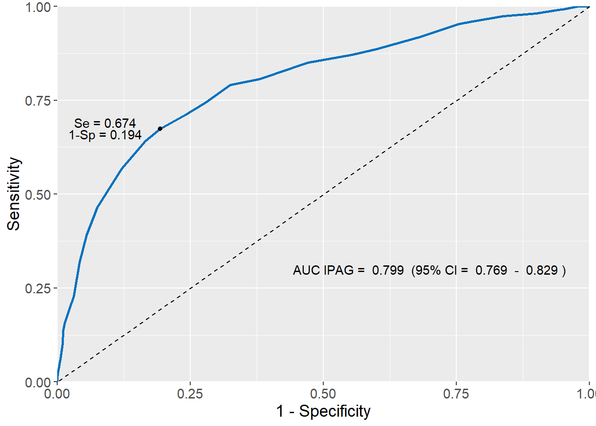
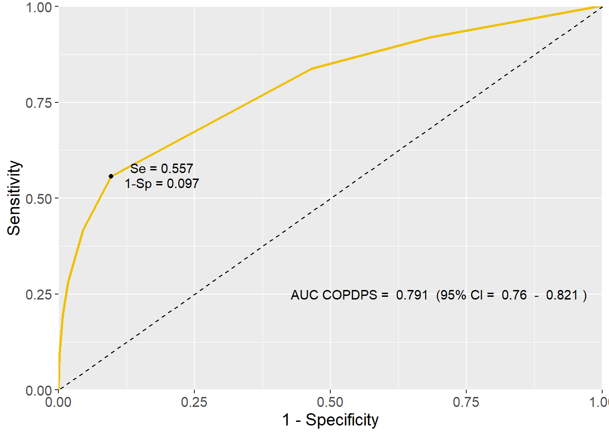
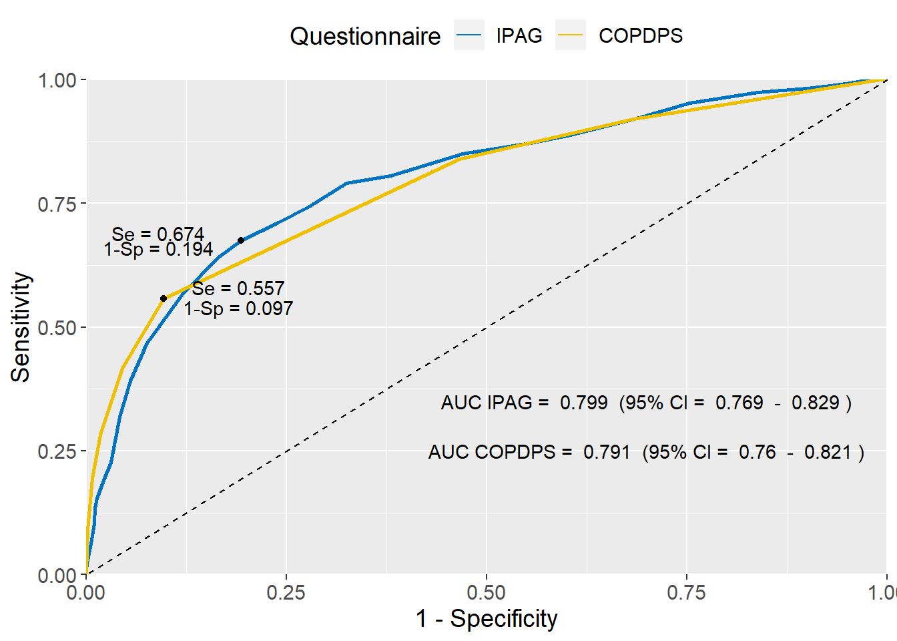

15 Receiver Operating Characteristic (ROC) curve
When a diagnostic test result is measured in a continuous scale, sensitivity and specificity vary with different cut-off points (thresholds). Therefore, a convenient cut-off point1 must be selected in order to calculate the measures of diagnostic accuracy of the test. Receiver operating characteristic (ROC) curve analysis can be used to help with this decision.
1 NOTE: there is critique, however, that the binary diagnosis is problematic.
When we have finished this Chapter, we should be able to:
15.1 Research question
We want to compare two screening questionnaires for chronic obstructive pulmonary disease (COPD) among smokers aged >45 years in the primary care setting:
- International Primary Care Airways Group (IPAG) questionnaire (Score: 0-38)
- COPD Population Screener (COPDPS) questionnaire (Score: 0-10)
The diagnosis of COPD was based on spirometric criterion (FEV 1 /FVC <0.7 following bronchodilation), clinical status (medical history, symptoms and physical examination), and exclusion of other diseases.
15.2 Packages we need
We need to load the following packages:
15.3 Preraring the data
We import the data copd in R:
library(readxl)
dat <- read_excel(here("data", "copd.xlsx"))We inspect the data and the type of variables:
glimpse(dat)Rows: 2,587
Columns: 3
$ IPAG <dbl> 11, 15, 4, 7, 13, 15, 13, 14, 4, 21, 17, 11, 10, 17, 9, 18, …
$ COPDPS <dbl> 4, 3, 2, 2, 4, 4, 2, 2, 2, 6, 5, 2, 2, 4, 2, 4, 2, 5, 2, 3, …
$ diagnosis <dbl> 0, 0, 0, 0, 0, 0, 0, 0, 0, 1, 0, 0, 0, 0, 0, 0, 0, 0, 0, 0, …15.4 Using cut-off points and the ROC curve
Based on previous studies, the cut-off points for a positive response are:
- ≥ 17 for the IPAG questionnaire
- ≥ 5 for the COPDPS questionnaire.
We can evaluate these cut-off values by calculating their associated measures of diagnostic accuracy (i.e Se, Sp, PPV, NPV).
dat <- dat %>%
mutate(IPAG_cat = cut(IPAG, c(0, 17, 38), labels=c("-","+"),
include.lowest = TRUE, right=FALSE),
COPDPS_cat = cut(COPDPS, c(0, 5, 10), labels=c("-","+"),
include.lowest = TRUE, right=FALSE))
dat <- as.data.frame(dat)
# we need to create a roc object for each questionnaire
roc1 <- roc(dat$diagnosis, dat$IPAG)
roc2 <- roc(dat$diagnosis, dat$COPDPS)For screening purposes such as mammogram, the cut-off point can be selected to favor a higher sensitivity. Thus, a negative test result indicates the absent of the disease (SeNout; sensitive, negative, “rule out” the disease).
For confirmative diagnosis purposes, for example, when a chemotherapy is to initiated once the diagnosis is established, the cut-off point can be selected to favor a higher specificity. Thus, a positive test result indicates the presence of disease (SpPin; specificity, positive, “rule in” the disease).
Additionally, for a given diagnostic test, we can consider all cut-off points that give a unique pair of values for sensitivity and specificity. We can plot in a graph, which is known as a ROC curve, the sensitivity on the y-axis and 1-specificity (false positives) values on the x-axis for all these possible cut-off points of the diagnostic test. Then, the area under the ROC curve (AUC of ROC), also called the c-statistic, can be calculated which is a widely used measure of overall performance.
IPAG questionnaire
A. The use of a cut-off value: IPAG score ≥17
First, we will find the counts of individuals in each of the four possible outcomes in a 2×2 table for the cut-off point of 17:
table(dat$IPAG_cat, dat$diagnosis)
0 1
- 1670 70
+ 644 203Next, we reformat the table as follows:
tb1 <- as.table(
rbind(c(203, 644), c(70, 1670))
)
dimnames(tb1) <- list(
Test = c("+", "_"),
Outcome = c("+", "-")
)
tb1 Outcome
Test + -
+ 203 644
_ 70 1670results_IPAG <- epi.tests(tb1, digits = 3)
results_IPAG Outcome + Outcome - Total
Test + 203 644 847
Test - 70 1670 1740
Total 273 2314 2587
Point estimates and 95% CIs:
--------------------------------------------------------------
Apparent prevalence * 0.327 (0.309, 0.346)
True prevalence * 0.106 (0.094, 0.118)
Sensitivity * 0.744 (0.687, 0.794)
Specificity * 0.722 (0.703, 0.740)
Positive predictive value * 0.240 (0.211, 0.270)
Negative predictive value * 0.960 (0.949, 0.969)
Positive likelihood ratio 2.672 (2.428, 2.940)
Negative likelihood ratio 0.355 (0.290, 0.436)
False T+ proportion for true D- * 0.278 (0.260, 0.297)
False T- proportion for true D+ * 0.256 (0.206, 0.313)
False T+ proportion for T+ * 0.760 (0.730, 0.789)
False T- proportion for T- * 0.040 (0.031, 0.051)
Correctly classified proportion * 0.724 (0.706, 0.741)
--------------------------------------------------------------
* Exact CIsThe results using the cut-off point of 17 give Se = 0.744 (0.687 - 0.794) and Sp = 0.722 (0.703 - 0.740). We observe that the probability of the absence of COPD given a negative test result is high NPV = 0.960 (95% CI: 0.949, 0.969) in this sample with smokers.
B. The area under the ROC curve of IPAG questionnaire
First, let’s get sensitivity and specificity if a cutoff point of 17 is used for the IPAG questionnaire and calculate the AUC (95% CI) of ROC. We will use these values to provide additional information about the data being displayed:
# get the sensitivity
se_IPAG <- round(results_IPAG$detail$est[3], digits = 3)
# get the specificity
sp_IPAG <- round(results_IPAG$detail$est[4], digits = 3)
# get AUC IPAG and the 95%CI for this area
auc_values1 <- round(ci.auc(roc1), 3)
ci_l1 <- auc_values1[1]
auc1 <- auc_values1[2]
ci_u1 <- auc_values1[3]
The ability of the IPAG questionnaire to discriminate between individuals with and without COPD is shown graphically by the ROC curve in (Figure 15.2):
# create the plot
g1 <- ggplot(dat, aes(d = diagnosis, m = IPAG)) +
geom_roc(n.cuts = 0, color = "#0071BF") +
theme(text = element_text(size = 14)) +
geom_abline(intercept = 0, slope = 1, linetype = 'dashed') +
geom_point(aes(x = 1-sp_IPAG, y = se_IPAG), color = "black") +
scale_x_continuous(expand = c(0, 0)) +
scale_y_continuous(expand = c(0, 0)) +
labs(x = "1 - Specificity", y = "Sensitivity")
# add annotations to the plot
g1 + annotate("text", x=0.70, y=0.30,
label=paste("AUC IPAG = ", auc1,
" (95% CI = ", ci_l1, " - ", ci_u1, ")")) +
annotate("text", x=0.18, y=0.78,
label=paste("Se =", se_IPAG)) +
annotate("text", x=0.18, y=0.74,
label=paste("1-Sp =", 1-sp_IPAG))
The AUC of IPAG questionnaire equals to 0.799 (95% CI: 0.769 - 0.829) which indicates a reasonable diagnostic test.
A test which is perfect at discriminating between those with disease and those without disease has an AUC = 1 (i.e. the ROC curve gets to the upper left-hand corner).
The dashed diagonal line connecting (0,0) to (1,1) is the ROC curve corresponding to a test that is completely useless in diagnosis of a disease, AUC = 0.5 (i.e. individuals with and without the disease have equal “chances” of testing positive).
COPDPS questionnaire
A. The use of a cut-off value: COPDPS score ≥5
First, we will find the counts of individuals in each of the four possible outcomes in a 2×2 table for the cut-off point of 5:
table(dat$COPDPS_cat, dat$diagnosis)
0 1
- 2089 121
+ 225 152Next, we reformat the table as follows:
tb2 <- as.table(
rbind(c(152, 225), c(121, 2089))
)
dimnames(tb2) <- list(
Test = c("+", "_"),
Outcome = c("+", "-")
)
tb2 Outcome
Test + -
+ 152 225
_ 121 2089results_COPDPS <- epi.tests(tb2, digits = 3)
results_COPDPS Outcome + Outcome - Total
Test + 152 225 377
Test - 121 2089 2210
Total 273 2314 2587
Point estimates and 95% CIs:
--------------------------------------------------------------
Apparent prevalence * 0.146 (0.132, 0.160)
True prevalence * 0.106 (0.094, 0.118)
Sensitivity * 0.557 (0.496, 0.617)
Specificity * 0.903 (0.890, 0.915)
Positive predictive value * 0.403 (0.353, 0.455)
Negative predictive value * 0.945 (0.935, 0.954)
Positive likelihood ratio 5.726 (4.864, 6.741)
Negative likelihood ratio 0.491 (0.430, 0.561)
False T+ proportion for true D- * 0.097 (0.085, 0.110)
False T- proportion for true D+ * 0.443 (0.383, 0.504)
False T+ proportion for T+ * 0.597 (0.545, 0.647)
False T- proportion for T- * 0.055 (0.046, 0.065)
Correctly classified proportion * 0.866 (0.853, 0.879)
--------------------------------------------------------------
* Exact CIsThe results using the cut-off point of 5 give Se = 0.577 (0.496 - 0.617) and Sp = 0.903 (0.890 - 0.915).
B. The area under the ROC curve of COPDPS questionnaire
Similarly, let’s get sensitivity and specificity if a cutoff point of 5 is used for the COPDPS questionnaire and calculate the AUC (95% CI) of ROC to provide additional information in the plot:
# get the sensitivity
se_COPDPS <- round(results_COPDPS$detail$est[3], digits = 3)
# get the specificity
sp_COPDPS <- round(results_COPDPS$detail$est[4], digits = 3)
# get AUC COPDPS and the 95%CI for this area
auc_values2 <- round(ci.auc(roc2), 3)
ci_l2 <- auc_values2[1]
auc2 <- auc_values2[2]
ci_u2 <- auc_values2[3]The ROC curve of IPAG questionnaire (Figure 15.3) follows:
# create the plot
g2 <- ggplot(dat, aes(d = diagnosis, m = COPDPS)) +
geom_roc(n.cuts = 0, color = "#EFC000") +
theme(text = element_text(size = 14)) +
geom_abline(intercept = 0, slope = 1, linetype = 'dashed') +
geom_point(aes(x = 1-sp_COPDPS, y = se_COPDPS), color = "black") +
scale_x_continuous(expand = c(0, 0)) +
scale_y_continuous(expand = c(0, 0)) +
labs(x = "1 - Specificity", y = "Sensitivity")
# add annotations to the plot
g2 + annotate("text", x=0.70, y=0.25,
label= paste("AUC COPDPS = ", auc2,
" (95% CI = ", ci_l2, " - ", ci_u2, ")")) +
annotate("text", x=0.19, y=0.56,
label=paste("Se =", se_COPDPS)) +
annotate("text", x=0.19, y=0.52,
label=paste("1-Sp =", 1-sp_COPDPS))
The AUC of COPDPS questionnaire equals to 0.791 (95% CI: 0.760 - 0.821) which is close to the value 0.799 of AUC of IPAG questionnaire.
15.5 Comparing ROC Curves
A. Graphical comparison of ROC curves
We can plot the ROC curves for both questionnaires in the same graph and compare the area under the curves (Figure 15.4):
# prepare the data
longdata <- melt_roc(dat, "diagnosis", c("IPAG", "COPDPS"))
longdata$name = factor(longdata$name, levels = c("IPAG", "COPDPS"))
# create the plot
g <- ggplot(longdata, aes(d = D, m = M, color = name)) +
geom_roc(n.cuts = 0) +
theme(text = element_text(size = 14),
legend.position="top") +
geom_abline(intercept = 0, slope = 1, linetype = 'dashed') +
scale_x_continuous(expand = c(0, 0)) +
scale_y_continuous(expand = c(0, 0)) +
scale_color_jco() +
labs(x = "1 - Specificity", y = "Sensitivity", colour="Questionnaire")
# add annotations to the plot
g + annotate("text", x=0.70, y=0.35, color = "#0071BF",
label=paste("AUC IPAG = ", auc1,
" (95% CI = ", ci_l1, " - ", ci_u1, ")")) +
annotate("text", x=0.70, y=0.28, color = "#EFC000",
label= paste("AUC COPDPS = ", auc2,
" (95% CI = ", ci_l2, " - ", ci_u2, ")"))
The AUC values obtained from the ROC curve were 0.799 (95% CI: 0.769 - 0.829) for the IPAG questionnaire and 0.791 (95% CI: 0.760 - 0.821) for the COPDPS questionnaire. Therefore, the two questionnaires have similar overall performance in the present sample.
B. Compare AUCs using the DeLong’ s test
The DeLong’s test can be used for comparing 2 areas under the curve (AUCs).
DeLong's test for two correlated ROC curves
data: roc1 and roc2
Z = 0.67525, p-value = 0.4995
alternative hypothesis: true difference in AUC is not equal to 0
95 percent confidence interval:
-0.01488242 0.03052696
sample estimates:
AUC of roc1 AUC of roc2
0.7986393 0.7908170 There was no significant difference in the AUC values with the two questionnaires (p = 0.45).